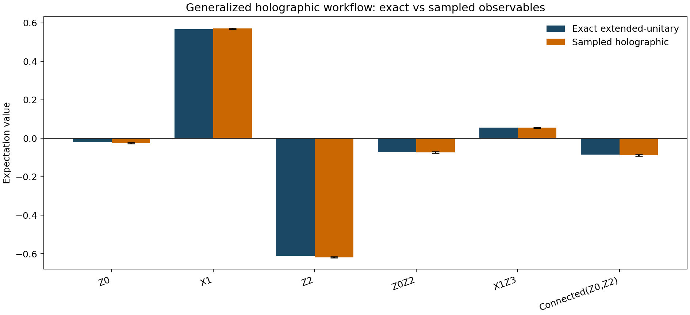
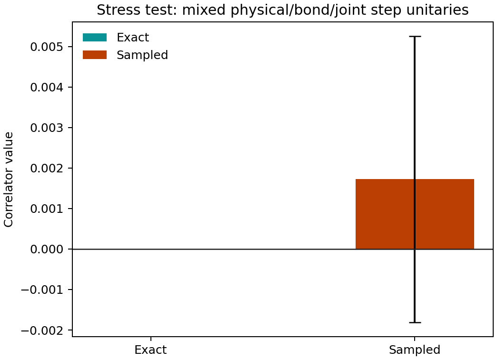

Tutorial: Generalized Holographic Unitary Workflow¶
This page documents the fully worked generalized holographic example in:
examples/quantum_algorithms/holographic_generalized_unitary_workflow.py
For a second concrete benchmark built from explicit GHZ and cluster-state
preparation circuits, see holographic_ghz_cluster_workflow.md.
The example exercises the new public finite-sequence interface:
StepUnitarySpecHolographicChannelSequenceHolographicSampler.from_unitary_sequence(...)HolographicSampler.from_mps_sequence(...)
It also writes the generated artifacts to:
outputs/holographic_generalized_unitary/summary.jsonoutputs/holographic_generalized_unitary/observable_comparison.csvoutputs/holographic_generalized_unitary/structural_checks.csvoutputs/holographic_generalized_unitary/stress_test_comparison.csv
Interface Convention¶
The holographic package always uses the ordering
The new per-step unitary interface makes the embedding rule explicit:
acts_on="joint": the provided unitary already acts onphysical ⊗ bond.acts_on="physical": the provided unitary is embedded as \(U_{\mathrm{physical}} \otimes I_{\mathrm{bond}}\).acts_on="bond": the provided unitary is embedded as \(I_{\mathrm{physical}} \otimes U_{\mathrm{bond}}\).
Finite explicit sequences are represented by HolographicChannelSequence. The
sequence length is the physical step count, so measurement schedules for these
finite workflows use total_steps = sequence.num_steps.
Example Construction¶
Initial State¶
The exact seed state is the four-qubit computational-basis product state
Random MPS Construction¶
In this example, “random MPS” does not mean random measurement noise or random gauge completion. The randomness enters the generated state structure itself:
- Start from the seed state \(|1011\rangle\).
- Apply four site-local Haar-random \(SU(2)\) rotations generated with seed
12345. - Apply nearest-neighbor partial-swap entanglers with angles \(\theta = (0.41, -0.33, 0.27)\).
- Convert the resulting normalized dense state into a right-canonical MPS.
- Complete each site tensor into the square right-isometry form used by the holographic sequence interface.
This keeps the starting point explicit while still producing a nontrivial state with nonzero one-point functions and nontrivial connected correlations.
Right-Isometry and Extended Unitaries¶
For the worked example, the completed site tensors all have shape (4, 2, 4).
The corresponding dense Stinespring unitaries therefore have shape (8, 8) at
every step, matching physical_dim = 2 and bond_dim = 4.
The maximum observed numerical violations were:
- right-isometry error: \(1.0513 \times 10^{-15}\)
- Kraus completeness error: \(1.0513 \times 10^{-15}\)
- dense unitary error: \(1.1733 \times 10^{-15}\)
Those values are at machine precision and confirm that the MPS-to-isometry and isometry-to-unitary lifts are numerically consistent.
Observable Validation¶
The example compares four equivalent representations:
- direct dense-state expectation values,
- MPS expectation values,
- exact finite-sequence holographic expectations from the completed extended unitaries,
- many-shot sampled holographic estimates.
The primary run uses 100000 shots. The observables are:
Z0X1Z2Z0Z2X1Z3Connected(Z0,Z2) = <Z0 Z2> - <Z0><Z2>
The exact and sampled values are:
| Observable | Exact | Sampled | Sampled stderr | \(|\Delta|\) |
|---|---:|---:|---:|---:|
| Z0 | -0.021091 | -0.025180 | 0.003161 | 0.004089 |
| X1 | 0.567432 | 0.570240 | 0.002598 | 0.002808 |
| Z2 | -0.610576 | -0.618100 | 0.002486 | 0.007524 |
| Z0Z2 | -0.072077 | -0.073260 | 0.003154 | 0.001183 |
| X1Z3 | 0.054934 | 0.055300 | 0.003157 | 0.000366 |
| Connected(Z0,Z2) | -0.084954 | -0.088824 | 0.003711 | 0.003870 |
All dense, MPS, and exact extended-unitary values agree to numerical precision. The sampled values remain within a few standard errors of the exact values, as expected for finite-shot Monte Carlo estimation.
The generated comparison plot is shown below.

Stress Test: Mixed Step-Unitary Embeddings¶
The example also includes a second finite-sequence stress test whose step unitaries are not all identical and do not all live on the same subsystem:
physical_rx:acts_on="physical"bond_rz:acts_on="bond"joint_partial_swap:acts_on="joint"physical_rx_tail:acts_on="physical"
This run uses 80000 shots and compares the new public sequence API against the
legacy exact branch table after explicitly resolving all joint unitaries.
The result is:
- exact public-sequence value:
1.4745e-17 - exact legacy value:
1.4745e-17 - sampled value:
0.001725 ± 0.003536
That confirms the new embedding-aware public interface reduces to the same exact physics as the older explicit-joint-unitary path when both are given the same resolved step program.

Practical Notes¶
- Use
HolographicSampler(channel, burn_in=...)when the same channel is repeated. - Use
HolographicSampler(sequence)when the steps are explicitly different. - Use
HolographicSampler.from_mps_sequence(...)when the site-by-site sequence should come directly from a dense state or from an MPS-derived right-isometry chain. - Use
StepUnitarySpecwhen a step acts only on the physical register or only on the bond register and should be embedded automatically into the fullphysical ⊗ bondspace.